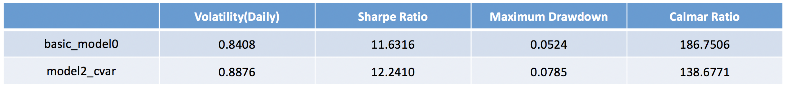
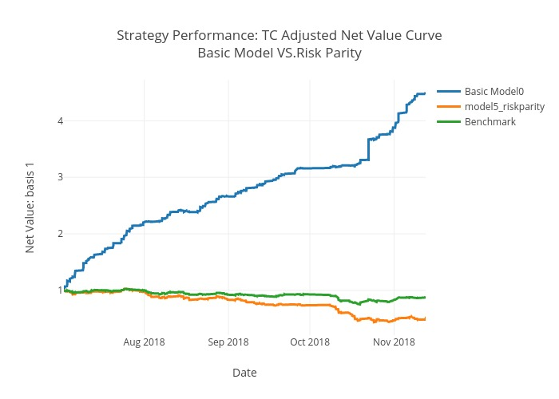

Systematic Investment
Alpha Signal, TCA & Portfolio Optimzation
Overview
In this project, we intend to improve classical Mean Variance Optimization(MVO) which is criticized for high sensitivity to the estimation on expected return and covariance. Moreover, we want to bring the model under the background of high frequency trading.
With that in Mind, we structure our project into 4 main parts: Data Input, Alpha Signal, Core Portfolio Optimization engine and Performance Analysis.

More detailedly, instead of the original MVO input, we trained our Signal based on statistical and technical features, calculate Covariance Matrix as well as transaction cost related data (ex. Bid-ask spread, and average daily volume). Then we inject them into the core portfolio optimization scheme.
In the optimizer, we embed transaction cost analysis into the object function. We also generate long-short indicator using Signals. Beyond that, we also experimented on several extensions according to different market intuitions.
The result of the optimization, i.e. weights determines how we trade and give us the portfolio performance.
Input & Assumption
- Market: China Security Index (CSI) constituents (500 single stocks)
- Data Frequency: 1 min
- Time Horizon: 01/01/2018 - 02/25/2019 -> nDates = 277 D * 240 min = 66,480
- Price Data: Close price, Volume, Bid, Ask
- Trading Frequency: 15 min
Raw Data
Assumptions:
- a. All the stock are divisble
- b. Price-taker trading mechanism
- c. No shortselling ban, and higher commission fee for shortselling
Benchmark choosing
- Traditional Benchmark: Index
- Survival Bias Problem (stock suspension, changes in index constituents...)
- Our Solution: Customized Benchmark
- Construct a new benmark with traded stock weighted based on market capitalization
Alpha Signal
Concept Financial Machine Learning
A. classical linear alpha signal prediction among stock market is notirously difficult...
- Non-linearity
- Noisy Randomness
- Pattern Decay - Regime Shift
B. general machine learning in finance is naively implemented
- Time Series
- Robustness
For this section, we aim to design a machine-learning based model to dynamically select out the upward and downward trending stock among the stock pool. Specifically, the machine learning algorithm output a trading signal for each stocks from training in the histrocial data. We strive to preserve the overfitting issue while maintaining a robust prediction to capture the trend under test set, thus enhancing the potential performance in true test set, which is live trading.
Feature Engineering
Independent Variabls
in total 160 point-in-time features
apply light gradient boosting tree model to find the feature importance on predicting the future stock return trend

Dependent Variables
For each 15 minute period, rank and accordingly label the pool's stock next period relative return as dependent target.
- Up (+1) - top 25% positive return stocks
- Down (-1) - bottom 25% loss return stocks
- Medium (0) - the rest stocks
Model Selection
Time Series Cross Validation
Implement walk-forward time series cross valdiation to avoid serial autocorrelation and look-ahead bias error, thus measuring the real validation set model performance.

Ensemble of Ensemble
From pre-experiment, the machine learning model is especially prone to overfitting problem: the in-sample performance is easy to hack, yet the validation set results largely underperforms. This suggests tougher bias-variance tradeoff for finance data.
Ensemble bagging and boosting tree models are empirically shown to be effectively robust than naive model at out-of-sample set. Moreover, given fairly uncorrelated classfiers, ensemble of the learners, i.e. mean value of reliable classfiers' predictions, brings about even more robust performance in the sense of diversification effect. Inpired by this, we introduce the ensemble model Random Forest and XGBoost, and furthermore ensemble the two model as the "ensemble of ensemble" classifier.
- Bagging - Random Forest
- Boosting - XGBoost
- Ensemble: combine XGBoost and Random Forest together
- Rolling Training Set - latest one week
- Forward Prediction - next day (16 predicting period point)
- Adaptive Feature Selection
Objective function:
- Risk Measurement
- Risk Management
Intuition:
- Annualized standard deviation of returns falls below the target
Formulation:

Source:
- Nawrocki, David (Fall 1999). "A Brief History of Downside Risk Measures". The Journal of Investing
Intuition:
- A risk assessment measure that quantifies the amount of tail risk
- An alternative way to improve skewness
Source:
- Luis F. Zuluaga & Samuel H. Cox, Improving skewness of mean-variance portfolios
Intuition:
- Limit the maximum total amount of short selling, i.e., the L1 norm of the portfolio-weight vector is shrinked within a given threshold
- A generalization of the shortselling constraint in which the total amount of short-selling should not exceed a given budget
Source:
- Victor DeMiguel, Lorenzo Garlappi, Francisco J. & Nogales Raman Uppal (July 2007), A Generalized Approach to Portfolio Optimization: Improving Performance By Constraining Portfolio Norms
Intuition:
- Combination of MVP and EWP can result in higher sharpe ratio ...
When the short-selling ban is absent, returns on Minimum Variance Portfolio and returns on Equally-Weighted Portfolio have low correlation.
Formulation:

Source:
- Chonghui Jiang, Jiangze Du, Yunbi An, Combining the minimum-variance and equally-weighted portfolios: Can portfolio performance be improved
Intuition:
- The aim of Risk Parity Model is to make each asset contributes the same amount of risk to the portfolio.
- Catch statistical and technical features of stocks
- Improve MVO with better input
- Take market impact, commission fees, and bid-ask spread into account
- Make the whole scheme more realistic
- Experiment on several extensions according to different market intuitions
- Desirable result, also!
Model Race
To support our intuition, we use time series cross validation to hold a "race" for those candidate machine learning models in same data condition. Specifically, we use a logistics model as the baseline model.
In terms of the out-of-sample metrics, we focus on the F1 score, which is the geometric average of precision and recall. However, since our classfication scenario is a multi-class task, we focus more on the up and down class rather than the medium label. So we design a Up-Down F1 Score, which is the average of up and down class F1 score.
Ensemble in validation set verifies to be the best model.
Signal Output
With internal ensemble prediction algorithm, we could capture the market trend and thus use the predicted probability of rise-up, i.e. becoming top 25% at next period. We therefore iteratively output the ahead-prediceted probability for each candidate stock among the stock list as the score signal at each period.
During training set experience, we found that the machine learning model's predictive effectiveness decay over the passage of time. The out-of-sample performance wanes as the trained model lags behind prediction window, which may be due to the market regime shift. This alpha decay calls for a rolling window mechanism to train the model to be more responsive to the shift of market pattern.
We thus design and implement a rolling window pipeline to dynamically train the model and output the prediction, thus making model more robust to the changing short-term market environment.
Rolling Window Pipeline
We follow a rule-based rolling-window prediction algorithm, that always using the lagging one week data as training set, so as to be more responsive to the short-term market pattern; then only make the forward one-day length prediction.
During the training procedure, to deal with the curse of dimensionality problem, we also make an automatic feature selection from light GBM tree: filter out the irrelevant fetures with feature importance less than 0.05 and then use the left feature set as prediction features.
Out-of-Sample Results
For the prediction signal, we also keep the metrics as the test set performance, which lies as a reliable approximation of the real out-of-sample performance for the model.
| Precision | Recall | Macro F1 | Up-Down F1 | Accuracy |
|---|---|---|---|---|
| 0.51 | 0.38 | 0.48 | 0.41 | 0.58 |
Transaction Cost Analysis

As shown in the previous graph, the transaction cost plays a pivotal role in our long-signal-only portfolio, which may significantly influence our strategy net curve. As a result, we intend to add the transaction cost factor into our optimization model by taking market impact, bid-ask spread and commission fee into consideration.
In addition, compared with the benchmark, our long-signal-only strategy shows to be successful. Based on that, we are trying to use the short position and our optimizer to further improve our strategy.
Commission Fee & Bid Ask
Objective Function:

Source:
-
Grinoid & Kahn, Active Portfolio Management, 1999
Market Impact
Objective Function:

Source:
-
Grinoid & Kahn, Active Portfolio Management, 1999
Optimization Engine

Here, we take advantage of the popularly used Markowitz framework and take the minimum variance optimization as a starting point given the large estimation error of expected return. During the period that the benchmark undergoes selloffs, our optimized portfolio obtains significantly higher net value. Further, considering that the reality has various violations of the minimum variance optimization assumptions, we extend our basic model by focusing more on risk measurement and risk management. Finally, the results show that the downside risk and shrink weight extensions remarkably improve our basic model and our intuitions get proved.
Portfolio Optimization — Minimum Variance

Constraints:

Result:
Optimization Extension
Assumptions of Minimum Variance Optimization:
Covariance matrix is the correct measure of investment risk. Investment returns can be adequately represented by a joint elliptical distribution, e.g., Normal Distribution.
However, the reality is different... First, covariance matrix considers both the upside risk and downside risk. While, in most of the time, we are only concerned when we are losing money. Moreover, portfolio returns are known as having fat tail and even extreme values. Thus, the market intuitions lead us to focus more on improving our risk measurement and enhancing risk management.
Our optimization extension would focus on:

Optimization Extension 1: Downside Risk
Result:


Optimization Extension 2: Conditional Value at Risk (CVaR)
Result:

Optimization Extension 3: Shrink Weight
Result:
Optimization Extension 4: Combination with EWP
Result:

Optimization Extension 5: Risk Parity
Result:

Conclusion
To summarize, when the reality violates the minimum variance optimization assumptions, our model extensions based on market intuitions end up with significant improvements. To be specific, when we only consider the downside risk or try to improve the tail risk measurement by CVaR, we obtain an obviously higher net value during almost all the test period in spite of the overall selloff of the benchmark. When we opt to limit the maximum total amount of short selling by shrinking weight, we instead obtain an over 4.4 higher Sharpe Ratio.
In the condition that we diversify the portfolio by combining the optimized model with equally weighted portfolio, we do not improve the result as expected due to the large impact of transaction cost, which, on the other hand, proves our indispensable transaction cost analysis.
Finally, the attempt of risk parity model to diversify portfolio risk does not provide a desirable result either. This is because risk parity is more largely used in asset allocation between different asset classes.
In a nutshell, we managed to obtain remarkable improvements of the model based on most of our intuitions.
Wrap-up
Signal
TCA
Core Optimization Model
Overall, we achieved an increase in Net Value; Even in bear market, our net value almost maintain flat. Internally, all models out performs benchmark. Notebly, Semi Variance model and Shrink Weight bring our optimization scheme a whole stage up.


Contact
Xiaohui Li: xl2814@columbia.edu
Yiren Yuan: yy2891@columbia.edu
Meihua Ren: mr3846@columbia.edu
Fan Zhang: fz2275@columbia.edu
Zhenhong Zhang: zz2582@columbia.edu
Chang Liu: cl3785@columbia.edu
Columbia University Department of Industrial Engineering and Operations Research